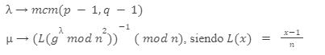
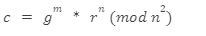
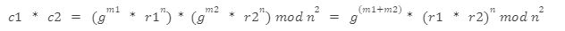
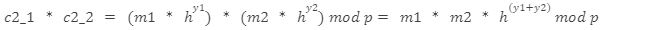
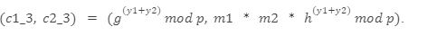
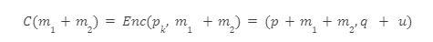
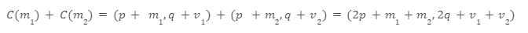
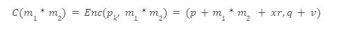
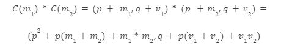

La criptografía homomórfica se caracteriza por tener distintos sistemas criptográficos que utilizan este sistema de cifrado. Entre los cuales podemos encontrar:
El esquema de Palier es un sistema de cifrado asimétrico (clave pública y clave privada) que tiene propiedades homomórficas en la operación de adición y multiplicación, estas propiedades permiten realizar sumas y multiplicaciones por escalares sobre los datos cifrados.
El esquema se basa en el problema a la hora de calcular la residualidad compuesta del enésimo residuo, y la seguridad viene dada por el problema computacional de factorizar números grandes.
Teniendo como clave pública el par (n,g) siendo:
En cuanto a la clave privada, tenemos:
Para cifrar un mensaje m, se elige un numero aleatorio denominado r Zn* y el mensaje cifrado es:
La propiedad homomórfica viene dada debido a que dos mensajes cifrados c1, c2, si se multiplican ambos
El resultado obtenido es un cifrado válido de la suma de los mensajes m1 y m2.
El esquema de cifrado de clave pública RSA, desarrollado por Ron Rivest, Adi Shamir y Leonard Adleman en 1977, utiliza la factorización de números enteros como problema matemático base para garantizar su seguridad. Pese a que RSA no es un esquema de cifrado homomórfico completo, posee propiedades homomórficas parciales, lo que permite realizar ciertas operaciones matemáticas sobre mensajes cifrados sin necesidad de descifrarlos previamente.
Una de las propiedades homomórficas parciales del RSA es la multiplicación. Esto significa que, dada una clave pública (n, e) y dos mensajes cifrados c1 = m1^e mod n y c2 = m2^e mod n , se puede calcular el producto de los mensajes originales m1 y m2 multiplicando sus cifrados:
El resultado es un cifrado válido del producto de los mensajes (m1 * m2). Sin embargo, esta propiedad homomórfica es limitada en comparación con otros esquemas de cifrado, ya que no permite realizar operaciones de suma o una cantidad ilimitada de operaciones matemáticas. La ventaja principal del esquema RSA radica en su simplicidad y su amplia adopción en la industria, lo que lo convierte en una opción popular para la comunicación segura en línea. A pesar de estas ventajas, el esquema RSA presenta desventajas en términos de velocidad, en particular cuando se trata de cifrado homomórfico. Los esquemas más modernos, como Paillier, ElGamal y esquemas de cifrado homomórfico totalmente (FHE), ofrecen una mayor eficiencia y propiedades homomórficas más robustas que permiten realizar una gama más amplia de operaciones matemáticas sobre datos cifrados.
El esquema de cifrado de clave pública ElGamal, propuesto por Taher Elgamal en 1985, se basa en problemas matemáticos difíciles con el fin de garantizar su seguridad, al igual que RSA.
El Gamal es utilizado en el estándar de cifrado de datos de internet (PGP) y posee propiedades homomórficas parciales, lo que permite realizar ciertas operaciones matemáticas sobre mensajes cifrados sin necesidad de descifrarlos previamente. Al igual que RSA, ElGamal permite multiplicar dos mensajes cifrados y obtener el mensaje cifrado del producto de los mensajes originales.
Dada una clave pública (p, g, h) y dos mensajes cifrados
, se puede calcular el producto de los mensajes originales m1 y m2 multiplicando los componentes c2 de sus cifrados:
El resultado es un cifrado válido del producto de los mensajes (m1 * m2) en la forma
La ventaja principal de ElGamal en comparación con RSA es la mayor velocidad de cómputo. Sin embargo, también presenta desventajas, como una mayor complejidad en su implementación y una adopción menos amplia en la industria en comparación con RSA.
La criptografía basada en retículos se enfoca en el estudio de las propiedades matemáticas de los retículos, las cuales son estructuras algebraicas que se utilizan como primitivas criptográficas para desarrollar esquemas criptográficos, en nuestro caso, también son utilizadas para desarrollar el sistema criptográfico homomórfico.
Los problemas basados en retículos son problemas mayoritariamente de optimización, también llamados problemas de celosía consisten en encontrar una solución para ese problema utilizando el menor tiempo posible.
La razón por la que se utilizan estos problemas con retículos dado que se asume que no existe una manera eficiente de resolver problemas bien conocidos de retículos. Debido a que la solución en el peor de los casos es extremadamente difícil, se usa como base para la creación de los criptosistemas denominados “extremadamente seguros” incluso pudiendo ser resistentes contra un ataque llevado a cabo por un ordenador cuántico.
A continuación se describirán algunos problemas basados en retículos, como por ejemplo:
El problema del vector más corto, en adelante SVP de sus siglas en inglés (Shortest Vector Problem) es un problema fundamental en la criptografía, respecto a la criptografía homomórfica, el SVP se utiliza como medio para la construcción de sistemas criptográficos seguros basados en las redes euclidianas, las cuales son un tipo de estructura matemática utilizada en la criptografía para la definición de operaciones entre vectores y matrices.
Teniendo como red euclídea un espacio de coordenadas cartesiano, el objetivo consiste en encontrar el camino más corto entre dos nodos, donde cada nodo representa un punto de esta red euclídea y las aristas las conexiones entre los nodos.
Para la resolución de este problema, teniendo en cuenta lo definido anteriormente, se puede utilizar el algoritmo de Dijkstra o el algoritmo A*, tomando en cuenta las distancias entre los nodos y las conexiones existentes entre ellos. Estos algoritmos únicamente son aplicables a retículos con dimensiones bajas, sin embargo, cuando nos vamos a las retículas de alta dimensión, resultan poco prácticos debido a que el número de vectores a examinar crece de manera exponencial con la dimensión.
El problema del vector más cercano, en adelante CVP es un problema de optimización dentro del área de la geometría computacional en donde se intenta encontrar el vector más cercano en cuanto a distancia euclidiana se refiere en una base de vectores dados, en términos de la criptografía homomórfica, consistiría en que el atacante intentará conseguir el mensaje original a partir de un mensaje cifrado utilizando operaciones homomórficas.
Dada una base de vectores (b1,b2 , ... ,bn) en un espacio euclídeo de n-dimensiones, el problema consiste en encontrar un vector x que minimice la distancia || x - v || entre x y un vector objetivo v, donde || . || es la norma Euclidiana.
El vector x se puede escribir como una combinación lineal de los vectores de la base, de la forma:
donde ai es un coeficiente entero para cada vector unitario de la base.
No existe/se conoce un algoritmo para resolver el CVP de una manera eficiente en un tiempo polinómico, sin embargo, sí que existen algoritmos aproximados que son capaces de resolver el problema en un tiempo polinómico.
El aprendizaje por errores, de ahora en adelante LWE, es un problema matemático que se utiliza en el ámbito de la criptografía para construir sistemas criptográficos seguros y eficientes. De igual manera que los problemas explicados en apartados anteriores, el LWE está basado en redes euclidianas.
Teniendo un conjunto de pares (ai,bi) donde ai es un vector aleatorio y bi es el producto escalar de ai con un vector secreto s sumado a un valor de ruido e, es decir que bi = ai * s +e, el objetivo es obtener el valor “s” a partir de los pares (ai,bi).
El problema LWE es un problema con una complejidad computacional alta, en particular, para el peor de los casos, es difícil encontrar un algoritmo que lo resuelva en un tiempo polinómico. Este problema en cuanto a la criptografía homomórfica, se ha utilizado para construir sistemas del tipo FHE (Fully Homomorphic Encryption), el cual permite realizar cualquier operación aritmética sobre los datos cifrados.
El aprendizaje por errores sobre anillos, de ahora en adelante RLWE, es un problema matemático empleado para crear sistemas criptográficos seguros y que guarda cierta similitud con el aprendizaje por errores (LWE) explicado en el apartado anterior.
El RLWE se define como sigue:
Se tiene un polinomio aleatorio f y otro polinomio g que es el producto del polinomio f y un polinomio secreto s más un valor de ruido e, es decir, g=f*s+e. El objetivo del RLWE es recuperar el polinomio secreto s a partir del par de polinomios (f,g).
El teorema que está detrás de este problema y del anterior consiste en la reducción del SVP en redes euclidianas a RLWE en anillos algebraicos, es decir, se establece que el problema SVP en redes euclidianas se puede reducir al problema RLWE en ciertos anillos de polinomios.
Dentro de la criptografía homomórfica tenemos diferentes esquemas de cifrado diferenciados por las capacidades de realizar operaciones homomórficas de cada uno, los tipos de esquemas homomórficos más populares son tres:
El cifrado parcialmente homomórfico, de ahora en adelante PHE de sus siglas en inglés (Partially Homomorphic Encryption) es un tipo de cifrado que nos permite realizar ciertas operaciones matemáticas sobre los datos cifrados sin la necesidad de descifrarlos previamente.
A diferencia del cifrado completamente homomórfico, en este solo se pueden efectuar menos operaciones y mas limitadas.
El PHE fue descubierto por los creadores del algoritmo RSA el cual, como se ha explicado en apartados anteriores, posee varias de estas propiedades homomórficas que nos permiten operar sobre los datos cifrados sin necesidad de descifrarlos.
El cifrado de Goldwasser-Micali es un esquema criptográfico asimétrico que basa su seguridad en la dificultad computacional de la resolución del residuo cuadrático en módulo n, fue propuesto en el año 1984 y es uno de los primeros algoritmos de clave pública que se basa en problemas matemáticos complejos.
La base detrás de este esquema de cifrado es que se pueda cifrar un mensaje de tal manera que sea fácil comprobar si un número es la clave correcta pero que sea difícil encontrar la clave correcta si no se tiene la información exacta. En este caso, el mensaje se representa como una cadena en binario y se cifra aplicando la función de cifrado a cada bit del mensaje.
El proceso de generación de claves es el siguiente:
Una vez que hemos generado el par de claves, el proceso de cifrado consiste en asociar cada bit del mensaje a cifrar con un residuo cuadrático módulo n, asignando un ‘0’ a los residuos cuadráticos no triviales y un ‘1’ a los residuos cuadráticos triviales, entonces generamos una secuencia de residuos cuadráticos aleatorios r1,r2,r3,r4, ... , ri de manera que vayan intercalados, es decir, si el i-ésimo bit del mensaje es un 0, será un residuo cuadrático no trivial y si es un 1, un residuo cuadrático lineal.
Calculamos c = r1 * xb1 * r2 * xb2 * ... * ri*xbi donde bi es el i-ésimo bit del mensaje a cifrar.
Para descifrar, tendríamos que determinar para cada r si es un residuo cuadrático o no mediante la ecuación rip-12 = 1 (mod p) y riq-12 = 1 (mod q), si ri es un residuo cuadrático no trivial, se asume que el i-ésimo bit es 0 y viceversa.
Finalmente, las propiedades homomórficas que ofrece este esquema de cifrado es el siguiente:
Es esta la razón por la que el esquema de cifrado de Goldwasser-Micali se suele utilizar como base para la creación de primitivas criptográficas más complejas.
El cifrado de Benaloh es un esquema criptográfico asimétrico que tiene propiedades homomórficas, fué propuesto en el año 1994 y la seguridad radica en dos aspectos, la aritmética modular y la complejidad de computación en la factorización de enteros dado que es altamente costoso factorizar números muy grandes en sus primos.
El proceso de cifrado es el siguiente:
Para el descifrado, el receptor calcula potencias de x usando el producto total de los números aleatorios generados durante el proceso de cifrado, a continuación calcula a-1mod p y utiliza la fórmula de descifrado: m = (c-a*(xb)-1*2r-1) mod p donde c es el mensaje cifrado y r es el número aleatorio de la lista de n-números.
Respecto a las propiedades homomórficas, el esquema de cifrado de Benaloh es considerado multiplicativamente homomórfico, es decir, es posible realizar una multiplicación entre dos mensajes cifrados y obtener como resultado el cifrado de la multiplicación de los dos mensajes originales, de la siguiente manera
Teniendo Enc como función de cifrado:
Es un esquema de cifrado que se basa en la criptografía basada en retículas. En términos técnicos, BGV se construye utilizando una versión modificada del problema del aprendizaje con errores (LWE), en el que se asume que un adversario no puede distinguir entre un conjunto de pares de valores aleatorios y un conjunto de valores enmascarados.
En BGV, los datos se codifican como polinomios y se cifran en una red reticular de alta dimensión. El cifrado se logra mediante una transformación lineal de los vectores de la red, que se realiza utilizando una matriz de clave pública. La decodificación se realiza mediante la solución de un problema de optimización de retícula, que es del tipo NP-duro.
El proceso de cifrado es el siguiente:
Generación de claves:
El proceso de generación de claves en BGV empieza por elegir dos números primos grandes p y q donde p q. Una vez que tenemos estos dos valores, definimos un polinomio irreducible denotado por f(x) de grado n con coeficientes en el campo finito Zp[x] / f(x).
Se elige un elemento g aleatorio del anillo polinomial Rq = Zq[x] / (xn+1) y se calculan los ideales de la forma a1Rq + a2(xn+1)Rq donde a1,a2 Zp[x] / f(x). Una vez sabemos cómo se calculan los ideales se eligen dos, uno público y uno privado respectivamente.
Cifrado de un mensaje:
La información a cifrar se convierte en un vector denotado por m
Se elige un polinomio aleatorio “r” con coeficientes en el campo Zq[x] / (xn+1), se calcula el producto del vector “r” con la clave pública, de ahora en adelante pk y se le suma el vector “m”, de la siguiente forma: c = pk*r +m, posteriormente se le añade r*q a c: c' = c+r*q. El resultado c’ es el mensaje “m” cifrado. Respecto a la homomorficidad aditiva, se asume que existen dos polinomios cifrados, C(m1) y C(m2), que corresponden a los mensajes m1 y m2 respectivamente, y se desea calcular la suma de estos mensajes, C(m1 + m2). La homomorficidad aditiva establece que:
Donde pk es la clave pública, p y q son dos polinomios aleatorios de anillo, y u es un polinomio pequeño que asegura la seguridad del cifrado. La suma de dos polinomios cifrados se puede calcular como:
Donde v1 y v2 son dos polinomios aleatorios de anillo. Como se puede ver, la suma de los polinomios cifrados resulta en un polinomio cifrado que corresponde a la suma de los mensajes originales, demostrando la homomorficidad aditiva.
Para demostrar la homomorficidad multiplicativa, se asume que existen dos polinomios cifrados, C(m1) y C(m2), que corresponden a los mensajes m1 y m2respectivamente, y se desea calcular el producto de estos mensajes, C(m1 * m2). La homomorficidad multiplicativa establece que:
Donde x es un polinomio pequeño, r es un entero aleatorio y v es un polinomio pequeño que asegura la seguridad del cifrado. El producto de dos polinomios cifrados se puede calcular como:
Donde v1y v2 son dos polinomios aleatorios de anillo. Como se puede ver, el producto de los polinomios cifrados resulta en un polinomio cifrado que corresponde al producto de los mensajes originales, demostrando la propiedad homomórfica multiplicativa.
El esquema de cifrado completamente homomórfico GSW es un esquema de cifrado completamente homomórfico que fue propuesto por Gentry, Sahai y Waters en el año 2013, y propone un esquema FHE basado en el problema del aprendizaje con errores en retículos (LWE) mas simplificado debido a que no se utilizan cambios de módulo ni claves de evaluación, sin embargo, se aprovecha de que el crecimiento del “ruido discreto” se mantiene lineal debido a la profundidad multiplicativa.
Este esquema de cifrado completamente homomórfico soporta operaciones tanto de suma como de multiplicación homomórficas, la base de funcionamiento de este esquema es, como se ha mencionado en el anterior párrafo, el ruido discreto, el cual actúa como una fuente de aleatoriedad que oculta la información obtenida en los datos originales y cuyo crecimiento es lineal.
En este esquema, el bit m del texto plano se extiende en el propio vector en texto plano a cifrar multiplicando este valor por un vector “gancho”, posteriormente cada entrada del vector a cifrar se cifra en un vector de texto cifrado que tiene forma de matriz en lugar de vector, en concordancia con el tipo de dato que es utilizado en el LWE.
En años sucesivos se han hecho propuestas de esquemas de cifrado completamente homomórficos basados en este GSW, por ejemplo, en el año 2018 se propusieron nuevos métodos de evaluación de enteros polinomiales el cual tiene un crecimiento mucho menor del ruido y el coste para la multiplicación es bastante menor.
Si desea mas información puede acceder al paper en la siguiente url: Efficient Homomorphic Integer Polynomial Evaluation Based on GSW FHE | The Computer Journal | Oxford Academic (oup.com)
El último reporte relevante respecto a este tema, se realizó en el año 2021, donde se propone un esquema de cifrado completamente homomórfico basado en el GSW sobre los números enteros, de ahora en adelante FHE-OI. Este esquema de cifrado nuevamente se ha creado con el objetivo de mejorar la eficiencia, en este caso se propuso una nuevo método para calcular el ruido denominado “secuenciación”. Este estudio obtuvo como resultado que, utilizando este nuevo método de cálculo del ruido, las operaciones con mayor profundidad multiplicativa se podían evaluar con los mismos parámetros. Si se desea indagar más acerca de este estudio, puede acceder al siguiente enlace: Efficient GSW-Style Fully Homomorphic Encryption over the Integers (hindawi.com)